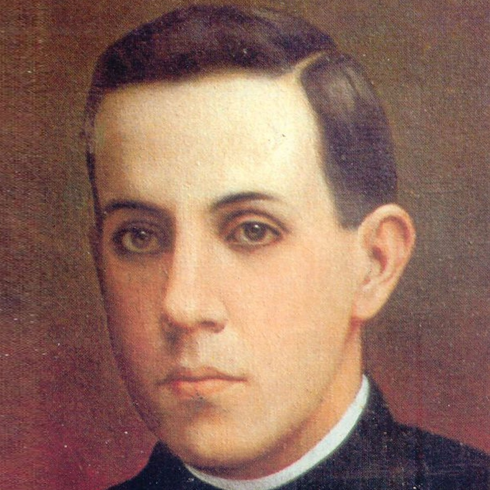

Isusovački blaženici
Svećenik
Bl. Mihael Augustin Pro
1891. – 1927.
Meksički isusovac potajno je dijelio sakramente za progona Crkve. Nevin je optužen za političko nasilje i strijeljan, ostavši do smrti vjeran Kristu.
Tekst je preveden i prilagođen uz pomoć umjetne inteligencije.

Izvor slike
- Spomendan
- 23. studenoga
- Zaštitništvo
- Nije navedeno u izvoru
- Životni vijek
- 1891. – 1927.
- Djelovanje
- Misije i evangelizacija · Progoni i progonstvo · Mučeništvo
- Razdoblje
- 19., 20. stoljeće
- Svećeničko ređenje
- 1925.
- Datum rođenja
- 13.01.1891.
- Mjesto rođenja
- Guadalupe de Zacatecas, Meksiko
- Datum smrti
- 23.11.1927.
- Mjesto smrti/mučeništva
- Ciudad de México, Meksiko
- Okolnosti smrti/mučeništva
- Strijeljan bez redovitoga suđenja tijekom protukatoličkih progona.
- Uloga
- Svećenik
- Mučenik
- Da
- Ostale oznake
- Djelovao potajno kao svećenik; poznat po uskliku Živio Krist Kralj
- Pripadnost
- Isusovac
- Drugi oblici imena
- Miguel Agustín Pro · Miguel
Životopis
Miguel Agustín Pro rođen je 1891. u Guadalupeu de Zacatecasu, u obitelji rudarskoga inženjera. Priprava kod privatnih učitelja nije mu dala potpuno srednjoškolsko obrazovanje, pa je u Družbi Isusovoj teškoće nadoknađivao ustrajnošću i molitvom. Zavjete je položio 1913. Progoni su sljedeće godine razorili novicijatsku kuću i spalili knjižnicu; formaciju je nastavio preko Los Gatosa u Kaliforniji, Španjolske i Nikaragve do Belgije.
U Enghienu je studirao teologiju i sociologiju, želeći razumjeti radničke prilike. Bolest i strah da neće ostvariti željeni apostolat pratili su njegovu pripravu, ali nije izgubio vedrinu. Biskup Lecomte zaredio ga je 30. kolovoza 1925. Sljedećega je dana slavio prvu misu u kapeli sv. Josipa. Njegov je svećenički identitet rastao iz molitve, Euharistije, ispita savjesti i spremnosti na raspoloživost ljudima različita podrijetla.
U lipnju 1926. vratio se u Meksiko, neposredno prije zabrane javnoga bogoslužja. Po Ciudad de Méxicu organizirao je potajne postaje za propovijedanje i sakramente. Prerušavanjem je izbjegavao nadzor, nastojeći ne uskratiti pratnju bolesnima i siromašnima. Braća Humberto i Roberto pomagala su mu tiskati i širiti vjerske tekstove. Njegovu snalažljivost nije pokretala želja za političkim nasiljem, nego za očuvanjem pastoralne službe.
Nakon neuspjeloga atentata na Álvara Obregóna u studenome 1927. sva su trojica uhićena zbog automobila koji je brat već bio prodao. Premda se stvarni počinitelj Luis Segura predao, predsjednik Calles odredio je pogubljenje. Pro je 23. studenoga zatražio molitvu, odbio povez i raširio ruke s krunicom. Umro je opraštajući i ispovijedajući Krista Kralja. Humberto je također ubijen, Roberto pošteđen. Mnoštvo je došlo na bdjenje, a njegovi se ostatci čuvaju u župi Svete Obitelji u Ciudad de Méxicu.
Tekst je preveden i prilagođen uz pomoć umjetne inteligencije.
Pročitaj više na izvornoj stranici ↗